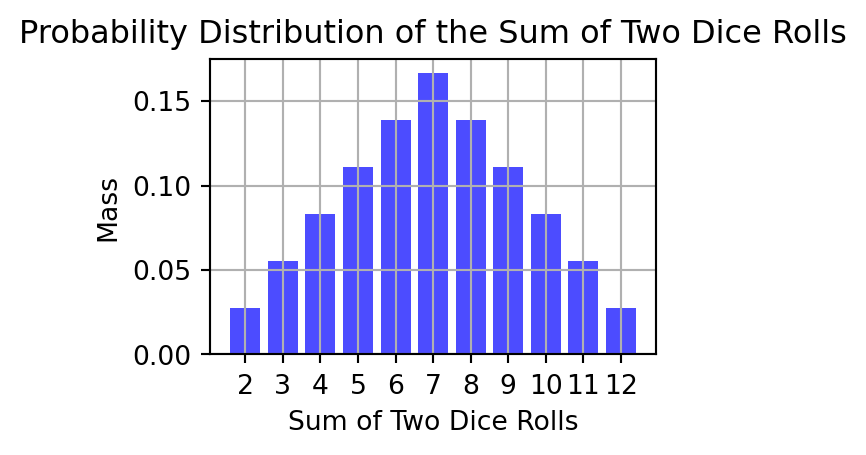
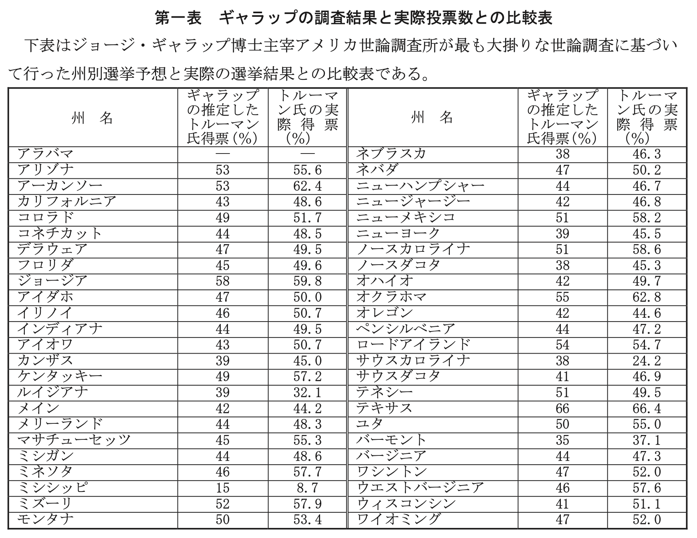

$$
%%% 演算子
%%% 線型代数学%%% 複素解析学 %%% 集合と位相
%%% 形式言語理論 %%% Graph Theory
%%% 多様体 %%% 代数 %%% 代数的位相幾何学 %%% 微分幾何学 %%% 函数解析 %%% 積分論%%% Fourier解析 %%% 数値解析
%%% 確率論%%% 情報理論 %%% 量子論 %%% 最適化 %%% 数理ファイナンス
%%% 偏微分方程式 %%% 常微分方程式 %%% 統計力学 %%% 解析力学
%%% 統計的因果推論 %%% 応用統計学 %%% 数理統計%%% 計量経済学
%%% 無限次元統計模型の理論%%% Banach Lattices
%%% 圏 %代数の圏 %Metric space & Contraction maps %確率空間とMarkov核の圏 %Sober space & continuous map %Category of open subsets %Category of sheave %Category of presheave, PSh(C)=[C^op,set]のこと %Convergence spaceの圏 %一様空間と一様連続写像の圏 %フレームとフレームの射 %その反対圏 %滑らかな多様体の圏 %Quiverの圏
%%% SMC %%% 括弧類%%% 予約語
%%% 略記
%%% 矢印類 $$
シリーズトップページはこちら．
1 数学的骨格
詳しくは 本サイトの数学記法一覧 を参照．
1.1 確率空間
集合 \(\Omega\) というのを自由にとって良いというのが，確率論の懐の広さであり，統計学で出会う多種多様な問題に対応できる所以である．
サイコロの出目を考える場合は \(\Omega=\{1,2,3,4,5,6\}\) ととってその上の確率空間に関する理論を借りれば良い．殆どの場合は \(\Omega=\mathbb{R}\) と取ることになる．
1.2 確率変数の概念
確率変数の概念は，確率論において最も重要なものである．David Mumford というフィールズ賞も受賞した世界的な数学者（専門が確率論というわけではない）も，次のように述べている：
The basic object of study in probability is the random variable and I will argue that it should be treated as a basic construct, like spaces, groups and functions, and it is artificial and unnatural to define it in terms of measure theory. (Mumford, 2000, p. 108)
確率変数が重要な理由は，それは確率分布と違うということを徹底的に教えてくれることにある．換言すれば，日常的な感覚で確率を議論するとなかなかモヤモヤが解消せずに解った気になれない理由は，確率変数と確率分布という本来別々の存在を人間は混同してしまいがちだからからである，と教えてくれるのが現代の確率論なのである．
中高の数学での「場合の数と確率」は特に混同の傾向が強い．三角関数がどのように社会の役に立つか不思議に思ったことがあるならば，あそこで習った初頭的な議論がどう統計学に応用されてどうして AI が生まれるに至ったのかたいへん不思議であろう．中高での離散的な議論を連続な場合にも通用するようにするためには，確率分布と確率変数を峻別することが肝要 である．
確率変数は，「変数」の概念の確率化 である．変数は，高校数学などでも \(x,y,z,\cdots\) と小文字で表したが，確率変数は \(X,Y,Z,\cdots\) と大文字で表す． \(\Omega=\{*\}\) と標本空間を一点集合と取った場合，確率変数は通常の決定論的な変数と同義になる．
1.3 分布の押し出し
では実際に，確率分布と確率変数がどう違うかを説明する．
確率分布は確率空間に宿るもので，確率変数は確率空間を繋ぐものである．
サイコロを２回振った出目の全体を標本空間とするならば， \[ \Omega:=[6]\times[6]=\left\{(1,1),(1,2),\cdots,(1.6),(2,1),\cdots\right\} \] という集合の上に，一様分布
を定義して得る確率空間を考えるのが一つの良い方法であろう．
これが確率分布である．
一方で，確率変数は，標本空間上の関数の全てである．例えば，出た目の和は確率変数である．
最も重要なことは，確率変数は分布を押し出す ということである．
実際，出た目の和は，確率分布を押し出して，次のような確率分布を定める：

2 今回の内容
数学的骨格を理解した状態で，今回範囲の内容 (草野耕一, 2016, pp. 73–96) を整理する．
2.1 母集団と標本 (pp.73-75)
2.1.1 母集団
標本調査が行われるとき，調査対象となる全体集団を 母集団 (population) という．全人口を精査することは困難であるため，ここから無作為に一部分を選ぶことになる．これを 標本調査 (survey sampling) といい，得られたデータを 標本 (sample) という．
すなわち，データとは確率変数 \(X_1,\cdots,X_n\) であり，これらの積が定める確率変数 \[ X=(X_1,\cdots,X_n):\Omega\to\mathbb{R}^n \] を考え，母集団を \(\Omega\) とし，確率変数 \(X_1,\cdots,X_n\) を標本とするのである．
\(X_1,\cdots,X_n\) が，母集団となる確率空間 \((\Omega,\operatorname{P})\) に関する情報をなるべく効率よく伝えてくれるように設計するのが重要である．実際，現代の標本調査では，無作為抽出が基本であり，一昔前では電話番号台帳の下一桁を無作為に選び，電話を掛けるという方法が用いられた．当然この場合，電話を持っていない標本 \(\omega\in\Omega\) についての情報は得られないので，その点に関する補正が必要になる，という具合である．
このように，「無作為」と言っても具体的にどのように選べば良いか？を考える分野を 標本調査法 (sampling theory) という．2 大統領選挙を通じての標本抽出法の発展の例は 節 3.2 に付した．
2.1.2 統計量の例
標本の関数を 統計量 (statistic) という．
2.1.3 母数とは何か？
本書 (草野耕一, 2016, p. 75) に
標本に統計量があるように母集団にもその特性を表す数値が備わっているはずであり，そのような数値のことを 母数 という．
とあるが，この文脈では母数ではなく 特性値 という (竹村彰道, 2020)．特性値を母数と設定することが多いが，それはあくまで統計解析者の裁量である．
母数とは次に示すように，推定対象として解析者が設定する母集団の特性値 である．標本統計量は実際に計算できるが，特性値と母数は未知である．
よって，ほとんどの場合，推測統計の問題とは母数推定の問題に他ならない．
真の分布を \(\operatorname{P}\) としたとき，これを近似すると思われる分布族 \(\{P_\theta\}_{\theta\in\Theta}\) を統計解析者が設定するのである．腕の見せ所である．
あなたが保険数理士だとして，重大事故の発生確率を推定する際， \[ \Omega=\left\{0,1,2,\cdots\right\} \] を一定期間内に起こる重大事故件数とすると，これに対する分布族は Poisson 分布族 \(\{\mathrm{Pois}(\lambda)\}_{\lambda>0}\) を取ると近似精度が良いことが知られている．Poisson 分布の母数 \(\lambda>0\) は 到着率 や 強度 と呼ばれる．
2.2 統計推測の技法(1) (pp.75-85)
本書 (草野耕一, 2016, pp. 75–85) の重大な特徴に，確率変数と確率分布を区別していないという問題がある．
確率分布とは 第１回講義 で導入した，３つの公理を満たす集合関数 \(\operatorname{P}:P(\Omega)\to[0,1]\) である．3 このとき，ペア \((\Omega,\operatorname{P})\) を，確率が定義された集合という意味で 確率空間 という．
確率変数 とは，確率空間 \((\Omega,\operatorname{P})\) 上に定義された関数 \(X:\Omega\to\mathbb{R}\) のことである．特に，値域が \(\mathbb{N}\subset\mathbb{R}\) に限る場合を 離散変数 という．
2.2.1 離散の場合
確率変数 \(X\) の取り得る値が \(\mathbb{N}=\{0,1,2,\cdots\}\) に限る場合が離散の場合である．
2.2.2 連続の場合
2.2.3 期待値の性質
2.2.4 独立性と共分散
2.3 統計推測の技法(2) (pp.85-94)
2.3.1 正規分布
Code
import numpy as np
import matplotlib.pyplot as plt
from ipywidgets import interact, FloatSlider
import seaborn as sns
# 正規分布のグラフを描画する関数
def plot_normal_distribution(variance):
mean = 0 # 平均値
sigma = np.sqrt(variance) # 標準偏差（分散の平方根）
# 正規分布のデータを生成
x = np.linspace(-10, 10, 1000)
y = (1 / (sigma * np.sqrt(2 * np.pi))) * np.exp(- (x - mean)**2 / (2 * sigma**2))
# グラフを描画
plt.figure(figsize=(3, 2))
sns.lineplot(x=x, y=y)
plt.title(f'Normal Distribution with Variance {variance}')
plt.xlabel('Value')
plt.ylabel('Probability Density')
plt.show()
# インタラクティブなウィジェットを作成
interact(plot_normal_distribution, variance=FloatSlider(value=1, min=0.1, max=5, step=0.1))<function __main__.plot_normal_distribution(variance)>2.3.2 Bernoulli分布と二項分布
2.3.3 Poisson分布
2.4 統計推測の技法(3) (pp.94-97)
ここで重要なトピックは不偏分散である．
3 補足
3.1 第1節：母集団と標本
3.1.1 「推測統計学」とは何か？
本書 (草野耕一, 2016, p. 73) でも次のような注がなされている：
推測統計学に対して，証拠から得られた情報をいかに効率的かつ明確に表現するかを研究する統計学の分野を記述統計学という (草野耕一, 2016, p. 73)．
現代では「統計学」と言った際にほとんど推測統計学を指すと言っても過言ではない．4 つまり，現代では殆ど形骸化した区別である．この名称の本当の意味を理解するためには，歴史的な情緒を持った文脈が必要である．
一言で言えば，推測統計学は Ronald A. Fisher の理論が出て来た際に，それ以前の Quetelet からの統計学との断絶を強調するために用いられた語であった．
推計学 stochastic は推計と計画のための科学であり，その建設は主として英国の農学者 R. A. Fisher （現在 Cambridge 大学教授）の構想に懸る．–(増山元三郎, 1950, p. 3)
前者の記述統計学的な動機は，現代では「データサイエンス」のような分野に引き継がれている (Hoaglin et al., 2006)．
3.2 Gallup事件
3.2.1 1936年大統領選挙とクオータ抽出の重要性
Roosevelt v.s. Landon (1936)
- 背景には1929年10月24日の「暗黒の木曜日」に端を発した世界大恐慌があった．
- 民主党 Franklin D. Roosevelt は再選を目指し，共和党の Alfred Landon が立ち向かった．
- Roosevelt の保守的な姿勢は大恐慌を食い止めるには力不足と思われ，再選の見込みは低いという意見も強く，The Literary Digest は237万人6 を対象に回収した調査結果から，57% の得票で Landon が勝つだろうと予測した．
- 一方で Gallup 率いる the American Institute of Public Opinion は3000人の標本から Roosevelt が 55.7% の得票を得て当選するだろう，と予測した．7
結果，Roosevelt が 60% の得票を得て，48州中46州を手にした．
なぜ The Literary Digest は予測を誤ったのか？その原因は不適切な標本抽出法にあった．
- The Literary Digest は自誌の購読者（大恐慌の最中でも購読した層）を対象に，そして自動車保有者と電話利用者の名簿を使って約1000万人に郵送し，回収された237万人の回答を用いた．
- 過去5回の大統領選挙で的中させていたのは，経済的な状況があまり投票結果に影響しない時勢だったためと思われる．
- 一方，Gallup は母集団を層別してサンプルサイズを割り当て，そのクオータに沿って標本を集める非確率的抽出法を用いていた．なお，Gallup は4ヶ月前から，The Literary Digest の予測は外れるだろうと新聞のコラム上で予言していた．
このエピソードは 不適切なデザイン下で収集された大量データよりも良いデザイン下で収集された少量のデータのほうがずっと役に立つ ということの好例として強調されることとなった．
しかし，話はここでは終わらない．その Gallup も，後の大統領選挙で予測を大きく外している．
3.2.2 1948年大統領選挙と無作為抽出の重要性
Truman v.s. Dewwey (1948)
- 1948年の選挙では，民主党は在任中に斃れた Roosevelt の後を継いでいた Harry Truman，共和党は4年前に Roosevelt に負けた Thomas Dewey が戦った．
- この年の背景には公民権問題があり，共和党が20年ぶりに政権を奪還すると予想されており，Gallup もその例にもれなかった．
結果，Truman が僅差で Dewey を破って当選した．
なぜクオータ法を用いたサンプリングで実績を出した Gallup は，今回は予測を大きく誤ったのか？
- 今回 Gallup も予想に失敗して世論調査そのものに懐疑の目が向けられたことを重く見て，検討委員会が設置された．
- そこで論点となったのが，当時 Gallup が用いていた割当法では，層内の個々の対象者の決定が調査員の個人的判断に委ねられていたことが多きなバイアスの原因となっていると予想された．
- その結果，今日では 無作為抽出 が大原則として一層強調されるエピソードとなっている (総務省統計局, 2023年4月21日確認)．
- だがこれ自体が原因だとは言えない．事実，調査担当員もそのことは自覚しており，予測を修正する調整技術を独自に開発して用いていたという (佐藤寧, 2020)．どんな標本調査法にも偏りがあり，これを修正するための予測モデルと併用するという営みは現在の無作為抽出法でも同様であり，これ自体が問題ではない．
- 当時（現在も）広く用いられている電話調査という手法が，1948年代当時では裕福な有権者（電話を購入することができ，また不変の住所を維持していた）に偏ったサンプル抽出に導いたという議論もある．8

1947年時点での GHQ による日本への統計指導でも，すでに無作為抽出法（当時は「任意見本法」）による調査が指導されている (佐藤寧, 2020)．よって，当時からクオータ法の問題は認識されており，これに必要な対策を打つ形で運用されていたと解すのが妥当であろう．
なお，日本側のエピソードとして，統計数理研究所第７代所長も務めた 林知己夫 のオーラルヒストリーに次のような一節がある：
そんな時に，CIEの担当官は，日本の新聞社を集めて，「アメリカではクォータサンプルでやっているけれど，そんなのはサンプリングじゃない」と，トルーマン，デューイの大統領選挙の予測を持ち出してきてですね，「これはクォータサンプリングでやったから間違えたんだ．こんなもの夢夢やるんじゃないぞ」と．そうしてみんな肝に銘じたんですよね．サンプリングは厳正にやらなきゃいけないって教わったわけです (高橋正樹, 2004)．
References
Hoaglin, D. C., Mosteller, F., & Tukey, J. W. (Eds.). (2006). Exploring data tables, trends and shapes. John Wiley & Sons. https://onlinelibrary.wiley.com/doi/book/10.1002/9781118150702
Jevons, W. S. (1879). Principles of science. Macmillan.
Mumford, D. (2000). The dawning of the age of stochasticity. In Mathematics : Frontiers and perspectives (pp. 197–218). American Mathematical Society. https://eudml.org/doc/289648
Wu, C., & Thompson, M. E. (2020). Sampling theory and practice. Springer Cham. https://link.springer.com/book/10.1007/978-3-030-44246-0
中山健夫. (2003). 「代表的な意見」とは何か？―「237万人」と「2万人」. 病院図書館, 23(2), 70–71. http://kintore.hosplib.info/dspace/handle/11665/962
佐藤寧. (2020). 1948年アメリカ大統領選挙予想は何故失敗したか. 日本世論調査協会報「よろん」, 126, 10–16. https://www.jstage.jst.go.jp/article/yoron/126/0/126_10/_article/-char/ja/
増山元三郎. (1950). 推計学への道 (2nd ed.). 東大協組出版部.
竹村彰道. (2020). 現代数理統計学 (2nd ed.). 学術図書.
総務省統計局. (2023年4月21日確認). なるほど統計学園 アメリカ大統領選挙の番狂わせ（前編）標本調査における偏り1. https://www.stat.go.jp/naruhodo/15_episode/episode/senkyo1.html
草野耕一. (2016). 数理法務のすすめ. 有斐閣. https://www.yuhikaku.co.jp/books/detail/9784641125889
鈴木督久. (2021). 世論調査の真実. 日本経済新聞出版本部.
高橋正樹. (2004). 科学史と科学者――林知己夫氏公開インタビュー――. 行動計量学, 31(2), 107–124. https://www.jstage.jst.go.jp/article/jbhmk/31/2/31_2_107/_article/-char/ja/
Footnotes
ただし，\(\mathbb{R}\) とは実数の全体からなる集合とした．↩︎
(Wu & Thompson, 2020) など．↩︎
数学では \(P(\Omega):=\left\{\Omega\;\text{の部分集合の全体}\right\}\) と表す．これを 冪集合 (power set) という．その頭文字の \(P\) である．↩︎
なお，(増山元三郎, 1950) の序によると，推測統計学 という語は北川敏男によるものであり，増山は 推計学 (stochastics) と呼んでいる．↩︎
\(\phi(y,y,\cdots)=\phi(x_1,x_2,\cdots)\) なる関係が成り立つとき，\(y\) を \(x_1,x_2,\cdots\) の平均という．参照：(Jevons, 1879, p. 391)↩︎
(鈴木督久, 2021) によると，実際はこれは史実の誤解であるようだ．Gallup が「Digest は Landon が 56% だとして予測を誤るだろう」というコラムを新聞社に送付するのに用いた標本が3000なのであって，Gallup 自身の選挙予測調査の標本サイズは30万人であったという．なお，その際の抽出法については歴史的な文献が欠けており，知る由がないという．とは言え，それでも，「標本は量より質」という教訓になる，という意味では，象徴的なエピソードであることは間違いない．↩︎